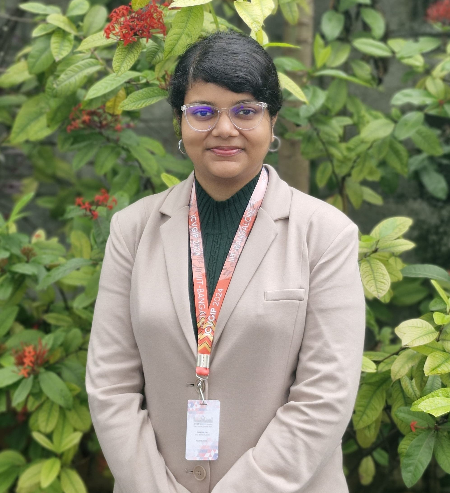

Rikathi Pal
Computer Science Ph.D. Candidate,
Stony Brook University, NY, USA
ripal@cs.stonybrook.edu
About Me
I am a Ph.D. candidate in Computer Science at Stony Brook University, working in the Visual Analytics and Imaging Lab (VAI Lab) under the guidance of Prof. Klaus Mueller. My research focuses on developing explainable and trustworthy AI systems for medical imaging, with the goal of bridging the gap between advanced machine learning models and real-world clinical adoption. By combining deep learning, visualization, and interpretable AI techniques, I aim to create intelligent medical imaging systems that not only achieve high performance, but also provide transparent and reliable insights that clinicians can confidently trust in critical healthcare decision-making.
I was a Pre-Doctoral Research Fellow in the Visualization and Graphics Lab (VGL Lab) of the Department of Computer Science and Automation at the Indian Institute of Science (IISc), Bengaluru, under the guidance of Prof. Vijay Natarajan.
I completed my B.Tech in Information Technology from the A.K.C.S.I.T. Department of the University of Calcutta, Kolkata. During my undergraduate studies, I worked under the guidance of Prof. Amlan Chakrabarti.
I also completed a research internship at the Machine Intelligence Unit (MIU) of the Indian Statistical Institute (ISI), Kolkata, where I was mentored by Prof. Ashish Ghosh.
My research interests include Computer Vision, Medical Image Processing, Computational Topology, Explainable AI,and Visualization.